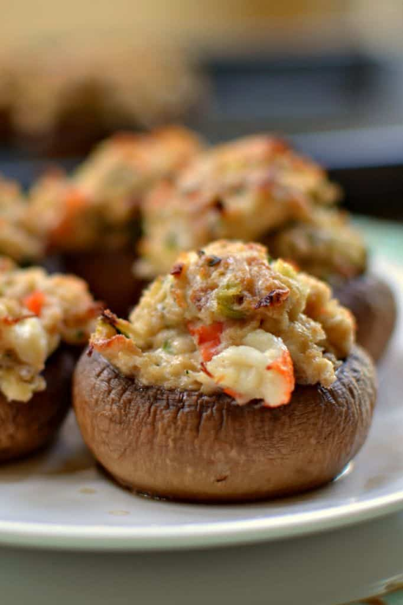

Crab-Stuffed Mushrooms

Stuffed crab, made with fresh lump crabmeat, onion, and bell pepper, seasoned with Old Bay and Cajun seasoning and bound with egg and toasted bread crumbs and baked.
Ingredients
- 2 tablespoons butter
- 2 tablespoons minced green onion
- 1 cup cooked crabmeat, finely chopped
- ½ cup dry bread crumbs
- ¼ cup shredded Monterey Jack cheese
- 1 egg, beaten
- 1 teaspoon lemon juice
- ½ teaspoon dried dill weed
- ½ cup butter, melted
- 1½ pounds fresh button mushrooms, stems removed
- ½ cup shredded Monterey Jack cheese
- ¼ cup dry white wine
Steps
- Preheat oven to 400 degrees F (200 degrees C).
- Melt 2 tablespoons butter in a skillet; cook and stir green onion until softened, about 2 minutes. Transfer green onion to a bowl. Stir in crabmeat, bread crumbs, 1/4 cup Monterey Jack cheese, egg, lemon juice, and dill weed until well mixed.
- Pour 1/2 cup melted butter in a 9x13-inch baking dish; turn mushroom caps in butter to coat. Fill mushroom caps with the crab mixture and sprinkle with remaining 1/2 cup Monterey Jack cheese. Pour white wine into baking dish.
- Bake in preheated oven until cheese is melted and lightly brown, 15 to 20 minutes.